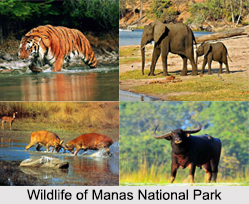

World Heritage Sites in India

Manas National Park
Manas National Park is a national park, Project Tiger reserve, and an elephant reserve in Assam, India.

Keoladeo National Park (1985)
This former duck-hunting reserve of the Maharajas is one of the major wintering areas for large numbers of aquatic birds from Afghanistan, Turkmenistan, China and Siberia.

Great Himalayan National Park Conservation Area
The GHNPCA protects the monsoon-affected forests and alpine meadows of the Himalayan front ranges.

Western Ghats
The Western Ghats region is a biodiversity hotspot. It contains of a large number of different species of flora and fauna, significant of which are endemic to this region.